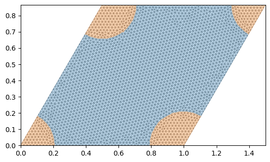
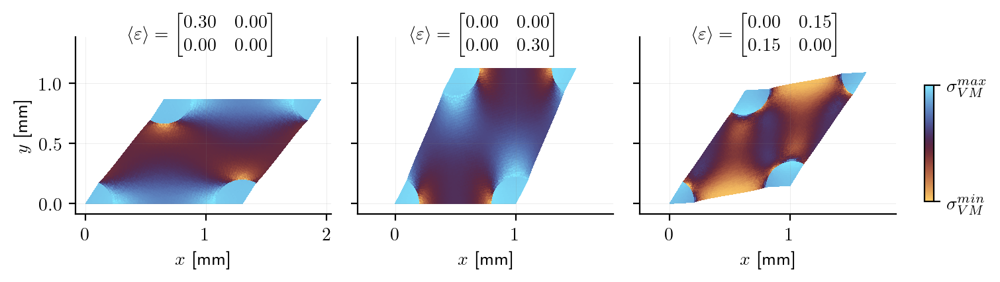

Colab Setup (Install Dependencies)
# Only run this if we are in Google Colab
if "google.colab" in str(get_ipython()):
print("Installing dependencies using uv...")
# Install uv if not available
!pip install -q uv
# Install system dependencies
!apt-get install -qq gmsh
# Use uv to install Python dependencies
!uv pip install --system matplotlib meshio
!uv pip install --system "git+https://github.com/smec-ethz/tatva-docs.git"
print("Installation complete!")
Periodic Boundary Conditions¤
We compute the effective (homogenized) stiffness of a periodic composite by solving a cell problem on one representative unit cell \(\mathcal{A}\). The microscopic displacement is decomposed as
where \(\boldsymbol{E}\) is a prescribed macroscopic strain and \(\boldsymbol{v}\) is a periodic fluctuation field.
We solve this example with two approaches:
- We show the use of Lagrange multipliers to enforce periodicity. We will solve the saddle-point problem using sparse differentiation and a direct sparse solver.
- Alternatively, we enforce periodicity through a MPC and static condensation, and solve the problem using a matrix-free CG-solver.
We follow Jeremy Bleyer's example: https://bleyerj.github.io/comet-fenicsx/tours/homogenization/periodic_elasticity/periodic_elasticity.html
Because the framework is fully differentiable, we can obtain \(\mathbb{C}^{\text{hom}}\) directly by differentiating the map \(\boldsymbol{E} \mapsto \langle\boldsymbol{\sigma}(\boldsymbol{E})\rangle\), rather than solving separate problems for multiple \(\boldsymbol{E}\).
import gmsh
import jax
import jax.numpy as jnp
import matplotlib.pyplot as plt
import numpy as np
from jax import Array
from tatva import Mesh, Operator, compound, element
jax.config.update("jax_enable_x64", True)
Meshing¤
We build a periodic unit square with circular inclusions using gmsh.
Two physical regions are extracted:
- Matrix elements
- Inclusions elements
Boundary edges are also tagged (left, right, top, bottom) so we can later pair nodes and impose periodicity.
Code for mesh generation and extraction
from itertools import chain
from typing import TypedDict
class PhysicalGroups(TypedDict):
Matrix: Array
Inclusions: Array
bottom: Array
right: Array
top: Array
left: Array
def plot_mesh(mesh: Mesh, pg: PhysicalGroups, ax: plt.Axes | None = None) -> None:
if ax is None:
fig, ax = plt.subplots()
ax.triplot(
mesh.coords[:, 0], mesh.coords[:, 1], mesh.elements, color="gray", linewidth=0.5
)
# Plot physical groups with different colors
ax.tricontourf(
mesh.coords[:, 0],
mesh.coords[:, 1],
mesh.elements,
jnp.zeros(mesh.coords.shape[0]).at[pg["Inclusions"]].set(1.0),
levels=[-0.5, 0.5, 1.5],
colors=["C0", "C1"],
alpha=0.3,
) # ty: ignore
ax.set_aspect("equal")
def extract_physical_groups(tag_map: dict) -> PhysicalGroups:
print("Extracting physical groups from Gmsh model...")
physical_surfaces: dict[str, Array] = {}
for dim, pg_tag in chain(
gmsh.model.getPhysicalGroups(dim=1), gmsh.model.getPhysicalGroups(dim=2)
):
name = gmsh.model.getPhysicalName(dim, pg_tag)
# Entities (surface tags) that belong to this physical group
entities = gmsh.model.getEntitiesForPhysicalGroup(dim, pg_tag)
els = []
for ent in entities:
# Get all mesh elements on this surface entity
types, _, node_tags_by_type = gmsh.model.mesh.getElements(dim, ent)
for etype, ntags in zip(types, node_tags_by_type):
nodes = np.array(ntags, dtype=np.int64).reshape(-1, etype + 1)
els.append(nodes)
if not els:
physical_surfaces[name] = np.zeros((0, dim + 1), dtype=np.int32)
continue
group_els = np.vstack(els, dtype=np.int32)
group_els = np.array(
[[tag_map[t] for t in tri] for tri in group_els], dtype=np.int32
)
physical_surfaces[name] = group_els
return physical_surfaces
def extract_mesh_data() -> tuple[Array, Array, PhysicalGroups]:
# Extract nodes and elements
node_tags, node_coords, _ = gmsh.model.mesh.getNodes()
tag_map = {tag: i for i, tag in enumerate(node_tags)}
nodes = jnp.array(node_coords).reshape(-1, 3)[:, :2]
elem_types, elem_tags, elem_node_tags = gmsh.model.mesh.getElements(2)
elements = jnp.array(elem_node_tags[0]).reshape(-1, 3) - 1
pg = extract_physical_groups(tag_map)
return nodes, elements, pg
def generate_mesh(
Lx: float, Ly: float, c: float, R: float, h: float
) -> tuple[Mesh, PhysicalGroups, NDArray]:
corners = np.array([[0.0, 0.0], [Lx, 0.0], [Lx + c, Ly], [c, Ly]])
a1 = corners[1, :] - corners[0, :] # first vector generating periodicity
a2 = corners[3, :] - corners[0, :] # second vector generating periodicity
gdim = 2 # domain geometry dimension
fdim = 1 # facets dimension
gmsh.initialize()
occ = gmsh.model.occ
model_rank = 0
points = [occ.add_point(*corner, 0) for corner in corners]
lines = [occ.add_line(points[i], points[(i + 1) % 4]) for i in range(4)]
loop = occ.add_curve_loop(lines)
unit_cell = occ.add_plane_surface([loop])
inclusions = [occ.add_disk(*corner, 0, R, R) for corner in corners]
vol_dimTag = (gdim, unit_cell)
out = occ.intersect(
[vol_dimTag], [(gdim, incl) for incl in inclusions], removeObject=False
)
incl_dimTags = out[0]
occ.synchronize()
occ.cut([vol_dimTag], incl_dimTags, removeTool=False)
occ.synchronize()
# tag physical domains and facets
gmsh.model.addPhysicalGroup(gdim, [vol_dimTag[1]], 1, name="Matrix")
gmsh.model.addPhysicalGroup(
gdim,
[tag for _, tag in incl_dimTags],
2,
name="Inclusions",
)
gmsh.model.addPhysicalGroup(fdim, [7, 20, 10], 1, name="bottom")
gmsh.model.addPhysicalGroup(fdim, [9, 19, 16], 2, name="right")
gmsh.model.addPhysicalGroup(fdim, [15, 18, 12], 3, name="top")
gmsh.model.addPhysicalGroup(fdim, [11, 17, 5], 4, name="left")
gmsh.option.setNumber("Mesh.CharacteristicLengthMin", h)
gmsh.option.setNumber("Mesh.CharacteristicLengthMax", h)
gmsh.model.mesh.generate(gdim)
nodes, elements, pg = extract_mesh_data()
mesh = Mesh(coords=nodes, elements=elements)
gmsh.finalize()
return mesh, pg, corners
Ly = np.sqrt(3) / 2.0 * Lx
c = 0.5 * Lx
R = 0.2 * Lx
h = 0.02 * Lx
mesh, pg, corners = generate_mesh(Lx, Ly, c, R, h)
Output
Info : Meshing 1D...ence
Info : [ 0%] Meshing curve 5 (Line)
Info : [ 10%] Meshing curve 6 (Ellipse)
Info : [ 20%] Meshing curve 7 (Line)
Info : [ 20%] Meshing curve 8 (Ellipse)
Info : [ 30%] Meshing curve 9 (Line)
Info : [ 40%] Meshing curve 10 (Line)
Info : [ 40%] Meshing curve 11 (Line)
Info : [ 50%] Meshing curve 12 (Line)
Info : [ 60%] Meshing curve 13 (Ellipse)
Info : [ 60%] Meshing curve 14 (Ellipse)
Info : [ 70%] Meshing curve 15 (Line)
Info : [ 70%] Meshing curve 16 (Line)
Info : [ 80%] Meshing curve 17 (Line)
Info : [ 90%] Meshing curve 18 (Line)
Info : [ 90%] Meshing curve 19 (Line)
Info : [100%] Meshing curve 20 (Line)
Info : Done meshing 1D (Wall 0.000598198s, CPU 0.00099s)
Info : Meshing 2D...
Info : [ 0%] Meshing surface 1 (Plane, Frontal-Delaunay)
Info : [ 30%] Meshing surface 2 (Plane, Frontal-Delaunay)
Info : [ 50%] Meshing surface 3 (Plane, Frontal-Delaunay)
Info : [ 70%] Meshing surface 4 (Plane, Frontal-Delaunay)
Info : [ 90%] Meshing surface 5 (Plane, Frontal-Delaunay)
Info : Done meshing 2D (Wall 0.0501108s, CPU 0.048249s)
Info : 2679 nodes 5432 elements
Extracting physical groups from Gmsh model...
plot_mesh(mesh, pg)

Problem setup¤
Material¤
We define isotropic linear elasticity for each phase through Lame parameters \((\mu,\lambda)\). The local constitutive law is
For a given macroscopic strain \(\boldsymbol{E}=\hat{\boldsymbol{\varepsilon}}\), the cell energy density uses
This lets us solve the microscopic fluctuation while embedding the imposed macro-strain.
from typing import NamedTuple
from jax_autovmap import autovmap
class Material(NamedTuple):
"""Material properties for the elasticity operator."""
mu: float # Shear modulus
lmbda: float # Lamé parameter
@classmethod
def from_youngs_poisson_2d(
cls, E: float, nu: float, plane_stress: bool = False
) -> "Material":
mu = E / 2 / (1 + nu)
if plane_stress:
lmbda = 2 * nu * mu / (1 - nu)
else:
lmbda = E * nu / (1 - 2 * nu) / (1 + nu)
return cls(mu=mu, lmbda=lmbda)
mat_matrix = Material.from_youngs_poisson_2d(50e3, 0.2)
mat_inclusion = Material.from_youngs_poisson_2d(210e3, 0.3)
@autovmap(grad_u=2)
def compute_strain(grad_u):
return 0.5 * (grad_u + grad_u.T)
@autovmap(eps=2, mu=0, lmbda=0)
def compute_stress(eps, mu, lmbda):
return 2 * mu * eps + lmbda * jnp.trace(eps) * jnp.eye(2)
@autovmap(grad_u=2, eps_hat=2, mu=0, lmbda=0)
def strain_energy(grad_u, eps_hat, mu, lmbda):
"""Includes macroscopic strain eps_hat."""
eps = compute_strain(grad_u) + eps_hat
sigma = compute_stress(eps, mu, lmbda)
return 0.5 * jnp.einsum("ij,ij->", sigma, eps)
Periodic mapping¤
Periodic kinematics require matching opposite boundary nodes:
- left \(\leftrightarrow\) right
- bottom \(\leftrightarrow\) top
The helper edge_bijection builds slave-to-master pairs by geometric matching.
Corner nodes are handled separately to avoid duplicate constraints.
from numpy.typing import NDArray
ArrayLike = NDArray | Array
mesh_matrix = mesh._replace(elements=pg["Matrix"])
mesh_inclusion = mesh._replace(elements=pg["Inclusions"])
op_matrix = Operator(mesh_matrix, element.Tri3())
op_inclusion = Operator(mesh_inclusion, element.Tri3())
op = Operator(mesh, element.Tri3())
def edge_bijection(
coords: ArrayLike,
m_group: ArrayLike,
s_group: ArrayLike,
*,
axis: int = 0,
offset: float = 0.0,
) -> Array:
"""Find a bijection between master and slave edge nodes. Returns an array of sorted
slave node indices such that s_nodes[i] -> m_nodes[i]
"""
axis = axis ^ 1 # bitwise xor to get the other axis
m_nodes = jnp.unique(m_group)
s_nodes = jnp.unique(s_group)
# exclude corners from the matching (min and max in axis direction)
m_nodes = m_nodes[
(coords[m_nodes, axis] != jnp.min(coords[m_nodes, axis]))
& (coords[m_nodes, axis] != jnp.max(coords[m_nodes, axis]))
]
s_nodes = s_nodes[
(coords[s_nodes, axis] != jnp.min(coords[s_nodes, axis]))
& (coords[s_nodes, axis] != jnp.max(coords[s_nodes, axis]))
]
# for each m_node, find the closest s_node depending on the periodicity vector
def find_closest_slave(m_node: ArrayLike, inv_axis: int) -> ArrayLike:
diffs = coords[s_nodes, inv_axis] - (coords[m_node, inv_axis] + offset)
return jnp.array([m_node, s_nodes[jnp.argmin(diffs**2)]])
return jax.vmap(find_closest_slave, in_axes=(0, None))(m_nodes, axis)
corner_nodes = [
jnp.argmin(jnp.linalg.norm(mesh.coords - corner, axis=1)) for corner in corners
]
corner_m = jnp.repeat(corner_nodes[0], 3)
corner_s = jnp.array(corner_nodes[1:])
left_right = edge_bijection(mesh.coords, pg["left"], pg["right"], axis=0)
bottom_top = edge_bijection(
mesh.coords, pg["bottom"], pg["top"], axis=1, offset=Lx * 1 / 2
)
corner_map = jnp.vstack([corner_m, corner_s]).T
PBCs with Lagrange Multipliers¤
We create a Compound subclass with two fields:
- \(\mathbf{u}\): the periodic displacement fluctuation field (n_nodes, 2)
- \(\lambda\): the lagrange multipliers (n_slave_nodes, 2)
import jax.experimental.sparse as jsparse
import scipy.sparse as sp
from tatva.lifter import DirichletBC, Lifter
from tatva.sparse import create_sparsity_pattern, reduce_sparsity_pattern
class SolutionLM(compound.Compound):
u = compound.field(mesh.coords.shape)
lm = compound.field(
(left_right.shape[0] + bottom_top.shape[0] + corner_s.shape[0], 2)
)
Code for augmenting sparsity pattern with dense constraint blocks (e.g., for Lagrange multipliers)
def add_dense_matrix_to_sparsity(
base_sparsity: jsparse.BCOO, B: Array, C_full: bool = False
) -> jsparse.BCOO:
"""Augment a base sparsity pattern with dense constraint blocks.
Args:
base_sparsity: Base sparsity pattern for the primal block.
B: Dense constraint coupling block to be appended.
C_full: Whether to use a dense (True) or identity (False) constraint block.
Returns:
Combined sparsity pattern including the constraint blocks.
"""
nb_cons = B.shape[0]
B_sparsity_pattern = jsparse.BCOO.fromdense(B).astype(jnp.int32)
BT_sparsity_pattern = jsparse.BCOO.fromdense(B.T).astype(jnp.int32)
if C_full:
c_dense = jnp.ones((nb_cons, nb_cons))
else:
c_dense = jnp.eye(nb_cons, nb_cons)
C = jsparse.BCOO.fromdense(c_dense).astype(jnp.int32)
sp_left = jsparse.bcoo_concatenate([base_sparsity, B_sparsity_pattern], dimension=0)
sp_right = jsparse.bcoo_concatenate([BT_sparsity_pattern, C], dimension=0)
full_sparsity = jsparse.bcoo_concatenate([sp_left, sp_right], dimension=1)
return full_sparsity
def constraints_func(u_flat: Array) -> Array:
"""A function that returns the residual of the periodicity constraints, which should
be zero at the solution. The Lagrange multipliers will enforce these constraints.
"""
(u, _) = SolutionLM(u_flat)
u_diff_left_right = u[left_right[:, 0]] - u[left_right[:, 1]]
u_diff_bot_top = u[bottom_top[:, 0]] - u[bottom_top[:, 1]]
u_diff_corners = u[corner_m] - u[corner_s]
return jnp.concatenate(
[
u_diff_left_right.flatten(),
u_diff_bot_top.flatten(),
u_diff_corners.flatten(),
]
)
Sparsity and graph coloring¤
from tatva_coloring import distance2_color_and_seeds
# generate base sparsity pattern for the primal block
sparsity = create_sparsity_pattern(mesh, 2)
# add dense blocks for the coupling constraints with Lagrange multipliers
sparsity = add_dense_matrix_to_sparsity(
sparsity,
jax.jacfwd(constraints_func)(jnp.zeros(SolutionLM.size))[
:, : -(SolutionLM.lm.shape[0] * 2)
],
C_full=False, # only coupling constraints, no dense interactions between Lagrange multipliers themselves
)
# we use a lifter to restrict rigid body modes
lifter = Lifter(
SolutionLM.size,
DirichletBC(SolutionLM.u[[corner_m[0]]]),
)
sparsity = reduce_sparsity_pattern(sparsity, lifter.free_dofs)
sparsity_csr = sp.csr_matrix(
(sparsity.data, (sparsity.indices[:, 0], sparsity.indices[:, 1])),
shape=sparsity.shape,
)
colors = distance2_color_and_seeds(
sparsity_csr.indptr, sparsity_csr.indices, sparsity.shape[0]
)[0]
print(f"Number of colors required: {jnp.max(colors) + 1}")
Number of colors required: 26
Energy functional and sparse Jacobian¤
The total cell energy is the sum of matrix and inclusion contributions:
We minimize in reduced variables by composing with the lifter, \(\Pi_r(\mathbf{v}) = \Pi(\text{lift}(\mathbf{v}))\).
jax.jacrev gives the residual, and a colored sparse Jacobian is assembled for efficient linear solves.
from tatva import sparse
def total_energy(u: Array, eps_hat: Array) -> Array:
# compute energy contributions from matrix and inclusion domains
e_inclusion = op_inclusion.integrate(
strain_energy(
op_inclusion.grad(u), eps_hat, mat_inclusion.mu, mat_inclusion.lmbda
)
)
e_matrix = op_matrix.integrate(
strain_energy(op_matrix.grad(u), eps_hat, mat_matrix.mu, mat_matrix.lmbda)
)
return e_inclusion + e_matrix
def lagrangian(u_flat: Array, eps_hat: Array) -> Array:
(u, lm) = SolutionLM(u_flat)
# add contribution from Lagrange multipliers enforcing periodicity constraints
return total_energy(u, eps_hat) + jnp.dot(lm.flatten(), constraints_func(u_flat))
def lagrangian_free(u_free: Array, eps_hat: Array) -> Array:
u_full = lifter.lift_from_zeros(u_free)
return lagrangian(u_full, eps_hat)
residual = jax.jacrev(lagrangian_free)
jacobian = sparse.jacfwd(
residual, sparsity_csr.indptr, sparsity_csr.indices, colors, has_aux_args=True
)
Solve for unit strains¤
We solve three independent 2D strain load cases (Voigt basis):
- \(\varepsilon_{xx}=1\)
- \(\varepsilon_{yy}=1\)
- \(\varepsilon_{xy}=1\) (implemented with symmetric \(0.5\) off-diagonals)
For each case, we solve the linearized equilibrium for fluctuation DOFs, then reconstruct
Newton-Krylov solver with sparse direct solver for the linearized system.
from functools import partial
@partial(jax.jit, static_argnames=["gradient", "compute_tangent"])
def newton_krylov_solver(
u,
gradient,
compute_tangent,
):
residual = gradient(u)
norm_res = jnp.linalg.norm(residual)
init_val = (u, 0, norm_res)
def cond_fun(state):
u, iiter, norm_res = state
return jnp.logical_and(norm_res > 1e-8, iiter < 10)
def body_fun(state):
u, iiter, norm_res = state
residual = gradient(u)
A = jax.jit(partial(compute_tangent, u_prev=u))
du, _ = jax.scipy.sparse.linalg.cg(A=A, b=-residual)
u = u + du
residual = gradient(u)
norm_res = jnp.linalg.norm(residual)
return (u, iiter + 1, norm_res)
final_u, final_iiter, final_norm = jax.lax.while_loop(cond_fun, body_fun, init_val)
jax.debug.print(" Residual: {res:.2e}", res=final_norm)
return final_u, final_norm
from dataclasses import dataclass
def sparse_solve(A: jsparse.BCOO, b: Array) -> Array:
return jsparse.linalg.spsolve(A.data, sparsity_csr.indices, sparsity_csr.indptr, b)
@dataclass
class Result:
u: NDArray
eps_hat: NDArray
v0 = jnp.zeros(lifter.size_reduced)
scale = 0.3
eps_hat_list = scale * jnp.array(
[
[[1.0, 0.0], [0.0, 0.0]],
[[0.0, 0.0], [0.0, 1.0]],
[[0.0, 0.5], [0.5, 0.0]],
]
) # unit strain tensors
results = []
for eps_hat in eps_hat_list[:]:
v = sparse_solve(jacobian(v0, eps_hat), -residual(v0, eps_hat))
u0 = (eps_hat @ mesh.coords.T).T
u = u0 + SolutionLM(lifter.lift_from_zeros(v)).u
results.append(Result(u=u, eps_hat=eps_hat))
Results¤
Functions for post-processing and visualization of results
from matplotlib.cm import ScalarMappable
from matplotlib.tri import Triangulation
from matplotlib.colors import ListedColormap, Normalize
from matplotlib.collections import LineCollection
import numpy as np
def cell_to_point_data(
coords: np.ndarray,
elements: np.ndarray,
celldata: np.ndarray,
*,
method: str = "area",
eps: float = 1e-30,
) -> np.ndarray:
"""Interpolate (average) per-cell data to nodes for a 2D triangular mesh.
Args:
coords: float
elements: (node indices per triangle)
celldata: (nels, ...) float (e.g. stress components per element)
method: "uniform" or "area"
- "uniform": each incident element contributes equally
- "area" : each incident element weighted by triangle area
eps: small number to avoid divide-by-zero
Returns:
pointdata: (nnodes, ...) float
"""
coords = np.asarray(coords)
elements = np.asarray(elements, dtype=np.int64)
celldata = np.asarray(celldata)
nnodes = coords.shape[0]
nels = elements.shape[0]
# Flatten celldata trailing dims -> (nels, ncomp)
trailing_shape = celldata.shape[1:]
cel_flat = celldata.reshape(nels, -1)
ncomp = cel_flat.shape[1]
# Optional weights per element
if method == "uniform":
w = np.ones(nels, dtype=cel_flat.dtype)
elif method == "area":
tri = coords[elements] # (nels, 3, 2)
a = tri[:, 1] - tri[:, 0]
b = tri[:, 2] - tri[:, 0]
# signed area*2 = cross(a,b) in 2D
w = 0.5 * np.abs(a[:, 0] * b[:, 1] - a[:, 1] * b[:, 0])
w = w.astype(cel_flat.dtype, copy=False)
else:
raise ValueError("method must be 'uniform' or 'area'")
# Accumulate: for each element, add w*celldata to its 3 nodes
point_sum = np.zeros((nnodes, ncomp), dtype=cel_flat.dtype)
weight_sum = np.zeros(nnodes, dtype=cel_flat.dtype)
contrib = cel_flat * w[:, None] # (nels, ncomp)
for j in range(3):
idx = elements[:, j]
np.add.at(point_sum, idx, contrib)
np.add.at(weight_sum, idx, w)
point_flat = point_sum / (weight_sum[:, None] + eps)
return point_flat.reshape((nnodes,) + trailing_shape)
def stress(u: Array) -> Array:
"""Computes the stress respecting the two separate materials."""
grad_u = op.grad(u).squeeze()
eps = compute_strain(grad_u)
sig_1 = compute_stress(eps, mat_matrix.mu, mat_matrix.lmbda)
sig_2 = compute_stress(eps, mat_inclusion.mu, mat_inclusion.lmbda)
mask = jnp.isin(op.mesh.elements, mesh_inclusion.elements).all(axis=1) # (nels,)
sig = jnp.where(mask[:, None, None], sig_2, sig_1)
return sig
def von_mises_2d(sig: Array) -> Array:
sxx = sig[..., 0, 0]
syy = sig[..., 1, 1]
sxy = sig[..., 0, 1]
return jnp.sqrt(sxx**2 - sxx * syy + syy**2 + 3 * sxy**2)
Matplotlib settings for plotting
plt.rcParams.update(
{
"text.usetex": True,
"text.latex.preamble": r"\usepackage{amsmath}",
"grid.color": "grey",
"grid.linestyle": "solid",
"grid.linewidth": 0.25,
"grid.alpha": 0.2,
"figure.dpi": 200,
}
)
fig, axes = plt.subplots(1, 3, figsize=(7.1, 2.2), sharey=True)
sig_vm_min = np.inf
sig_vm_max = -np.inf
for res in results:
sig = stress(res.u)
sig_vm = von_mises_2d(sig)
sig_vm_min = min(sig_vm_min, jnp.min(sig_vm))
sig_vm_max = max(sig_vm_max, jnp.max(sig_vm))
for i, (ax, res) in enumerate(zip(axes, results)):
ax: plt.Axes
x = mesh.coords + res.u
tri = Triangulation(x[:, 0], x[:, 1], triangles=np.array(mesh.elements))
sig = stress(res.u)
sig_vm = von_mises_2d(sig)
m = ax.tripcolor(tri, facecolors=sig_vm, cmap="managua", rasterized=True)
ax.set_aspect("equal", adjustable="datalim")
# keep axes size consistent
ax.set_ylim(-0.1 * Ly, Ly * 1.6)
ax.grid()
ax.set_xlabel("$x$ [mm]")
ax.spines["top"].set_visible(False)
ax.spines["right"].set_visible(False)
ax.annotate(
r"$$\langle\varepsilon\rangle = \begin{bmatrix}"
+ f"{res.eps_hat[0, 0]:.2f} & {res.eps_hat[0, 1]:.2f} \\\\ "
+ f"{res.eps_hat[1, 0]:.2f} & {res.eps_hat[1, 1]:.2f} "
+ r"\end{bmatrix}$$",
xy=(0.5, 0.89),
ha="center",
va="bottom",
xycoords="axes fraction",
)
axes[0].set(ylabel="$y$ [mm]")
cax = fig.add_axes((1.0, 0.3, 0.01, 0.4))
sm = ScalarMappable(Normalize(vmin=0, vmax=1), cmap="managua")
cb = fig.colorbar(sm, cax=cax, orientation="vertical", pad=0.1)
cb.set_ticks([0, 1])
cb.set_ticklabels((r"$\sigma_{{VM}}^{{min}}$", r"$\sigma_{{VM}}^{{max}}$"))
plt.tight_layout()
/tmp/ipykernel_98198/2498942156.py:45: UserWarning: This figure includes Axes that are not compatible with tight_layout, so results might be incorrect.
plt.tight_layout()

Compute homogenized stiffness tensor¤
From each solved microfield, we compute element stresses and average them over the cell:
The homogenized tangent in Voigt form is obtained by automatic differentiation of \(\langle\boldsymbol{\sigma}\rangle(\hat{\boldsymbol{\varepsilon}})\):
Note
Unfortunately, the sparse solver of jax is not differentiable yet. Therefore, we use a dense direct solver for this part of the example.
jacobian_dense = jax.jacfwd(residual)
def func(eps_hat_voigt: Array) -> Array:
"""Returns the average stress for a given macroscopic strain eps_hat (in Voigt notation)."""
eps_hat = jnp.array(
[[eps_hat_voigt[0], eps_hat_voigt[2]], [eps_hat_voigt[2], eps_hat_voigt[1]]]
)
v = jnp.linalg.solve(jacobian_dense(v0, eps_hat), -residual(v0, eps_hat))
u = (eps_hat @ mesh.coords.T).T + SolutionLM(lifter.lift_from_zeros(v)).u
sig = stress(u)
sig = jnp.mean(sig, axis=0) # average stress
return jnp.array([sig[0, 0], sig[1, 1], sig[0, 1]])
C_hom = jax.jacfwd(func)(jnp.ones(3))
print("Homogenized stiffness tensor (Voigt notation):")
with np.printoptions(precision=2):
print(C_hom)
Homogenized stiffness tensor (Voigt notation):
[[6.58e+04 1.75e+04 8.28e+01]
[1.75e+04 6.57e+04 1.44e+02]
[5.57e+01 8.66e+01 4.82e+04]]
PBCs through condensation¤
We create a Compound subclass with one field:
- \(\mathbf{u}\): the periodic displacement fluctuation field (n_nodes, 2)
Lifter enforces constraints in reduced coordinates.
We define:
PeriodicMap(slave, master)for periodic DOF ties- one
DirichletBCat a corner to remove rigid-body translation
Then the solver unknown is only the free DOF vector \(\mathbf{v}\), while lifter.lift_from_zeros(v) reconstructs the full constrained field.
from tatva.sparse import reduce_sparsity_pattern
from tatva.lifter import PeriodicMap, Lifter, DirichletBC
from tatva.sparse._extraction import create_sparsity_pattern_master_slave
class Solution(compound.Compound):
u = compound.field(mesh.coords.shape)
periodic_map = jnp.concatenate(
[
jnp.array([Solution.u[nodes, :] for nodes in left_right.T]).T,
jnp.array([Solution.u[nodes, :] for nodes in bottom_top.T]).T,
jnp.array([Solution.u[nodes, :] for nodes in corner_map.T]).T,
]
)
lifter = Lifter(
Solution.size,
DirichletBC(Solution.u[[corner_m[0]]]),
PeriodicMap(periodic_map[:, 1], periodic_map[:, 0]),
)
sparsity = create_sparsity_pattern_master_slave(
mesh,
2,
jnp.arange(Solution.size)
.at[Solution.u[[corner_m[0]]]]
.set(-1)
.at[periodic_map[:, 1]]
.set(periodic_map[:, 0]),
)
Energy functional¤
The total cell energy is the sum of matrix and inclusion contributions:
We minimize in reduced variables by composing with the lifter, \(\Pi_r(\mathbf{v}) = \Pi(\text{lift}(\mathbf{v}))\).
jax.jacrev gives the residual, and jax.jvp defines the Jacobian-Vector-Product function.
from typing import Callable
import scipy.sparse as sp
from tatva import sparse
def total_energy(u_flat: Array, eps_hat: Array) -> Array:
(u,) = Solution(u_flat)
# Inclusion gets Material 2, Matrix gets Material 1
e_inclusion = op_inclusion.integrate(
strain_energy(
op_inclusion.grad(u), eps_hat, mat_inclusion.mu, mat_inclusion.lmbda
)
)
e_matrix = op_matrix.integrate(
strain_energy(op_matrix.grad(u), eps_hat, mat_matrix.mu, mat_matrix.lmbda)
)
return e_inclusion + e_matrix
def lagrangian(u_free: Array, eps_hat: Array) -> Array:
u_full = lifter.lift_from_zeros(u_free)
return total_energy(u_full, eps_hat)
residual = jax.jacrev(lagrangian)
def jvp(loc: Array, eps_hat: Array) -> Callable[[Array], Array]:
def _jvp_fn(v: Array) -> Array:
return jax.jvp(residual, (loc, eps_hat), (v, jnp.zeros_like(eps_hat)))[1]
return _jvp_fn
Solve for unit strains¤
We solve three independent 2D strain load cases (Voigt basis):
- \(\varepsilon_{xx}=1\)
- \(\varepsilon_{yy}=1\)
- \(\varepsilon_{xy}=1\) (implemented with symmetric \(0.5\) off-diagonals)
For each case, we solve the linearized equilibrium for fluctuation DOFs, then reconstruct
from dataclasses import dataclass
import jax.experimental.sparse as jsparse
@dataclass
class Result:
u: NDArray
eps_hat: NDArray
v0 = jnp.zeros(lifter.size_reduced)
scale = 0.3
eps_hat_list = scale * jnp.array(
[
[[1.0, 0.0], [0.0, 0.0]],
[[0.0, 0.0], [0.0, 1.0]],
[[0.0, 0.5], [0.5, 0.0]],
]
) # unit strain tensors
results = []
for eps_hat in eps_hat_list:
v = jax.scipy.sparse.linalg.cg(jvp(v0, eps_hat), -residual(v0, eps_hat))[0]
u0 = (eps_hat @ mesh.coords.T).T
u = u0 + Solution(lifter.lift_from_zeros(v)).u
results.append(Result(u=u, eps_hat=eps_hat))
Results¤
fig, axes = plt.subplots(1, 3, figsize=(7.1, 2.2), sharey=True)
sig_vm_min = np.inf
sig_vm_max = -np.inf
for res in results:
sig = stress(res.u)
sig_vm = von_mises_2d(sig)
sig_vm_min = min(sig_vm_min, jnp.min(sig_vm))
sig_vm_max = max(sig_vm_max, jnp.max(sig_vm))
for i, (ax, res) in enumerate(zip(axes, results)):
ax: plt.Axes
x = mesh.coords + res.u
tri = Triangulation(x[:, 0], x[:, 1], triangles=np.array(mesh.elements))
sig = stress(res.u)
sig_vm = von_mises_2d(sig)
m = ax.tripcolor(tri, facecolors=sig_vm, cmap="managua", rasterized=True)
ax.set_aspect("equal", adjustable="datalim")
# keep axes size consistent
ax.set_ylim(-0.1 * Ly, Ly * 1.6)
ax.grid()
ax.set_xlabel("$x$ [mm]")
ax.spines["top"].set_visible(False)
ax.spines["right"].set_visible(False)
ax.annotate(
r"$$\langle\varepsilon\rangle = \begin{bmatrix}"
+ f"{res.eps_hat[0, 0]:.2f} & {res.eps_hat[0, 1]:.2f} \\\\ "
+ f"{res.eps_hat[1, 0]:.2f} & {res.eps_hat[1, 1]:.2f} "
+ r"\end{bmatrix}$$",
xy=(0.5, 0.89),
ha="center",
va="bottom",
xycoords="axes fraction",
)
axes[0].set(ylabel="$y$ [mm]")
cax = fig.add_axes((1.0, 0.3, 0.01, 0.4))
sm = ScalarMappable(Normalize(vmin=0, vmax=1), cmap="managua")
cb = fig.colorbar(sm, cax=cax, orientation="vertical", pad=0.1)
cb.set_ticks([0, 1])
cb.set_ticklabels((r"$\sigma_{{VM}}^{{min}}$", r"$\sigma_{{VM}}^{{max}}$"))
plt.tight_layout()
/tmp/ipykernel_98198/830935014.py:45: UserWarning: This figure includes Axes that are not compatible with tight_layout, so results might be incorrect.
plt.tight_layout()
Compute homogenized stiffness tensor¤
From each solved microfield, we compute element stresses and average them over the cell:
The homogenized tangent in Voigt form is obtained by automatic differentiation of \(\langle\boldsymbol{\sigma}\rangle(\hat{\boldsymbol{\varepsilon}})\):
def func(eps_hat_voigt: Array) -> Array:
eps_hat = jnp.array(
[[eps_hat_voigt[0], eps_hat_voigt[2]], [eps_hat_voigt[2], eps_hat_voigt[1]]]
)
v = jax.scipy.sparse.linalg.cg(jvp(v0, eps_hat), -residual(v0, eps_hat))[0]
u = (eps_hat @ mesh.coords.T).T + Solution(lifter.lift_from_zeros(v)).u
sig = stress(u)
sig = jnp.mean(sig, axis=0) # average stress
return jnp.array([sig[0, 0], sig[1, 1], sig[0, 1]])
C_hom = jax.jacfwd(func)(jnp.ones(3))
print("Homogenized stiffness tensor (Voigt notation):")
with np.printoptions(precision=2):
print(C_hom)
Homogenized stiffness tensor (Voigt notation):
[[6.58e+04 1.75e+04 8.28e+01]
[1.75e+04 6.57e+04 1.44e+02]
[5.57e+01 8.66e+01 4.82e+04]]